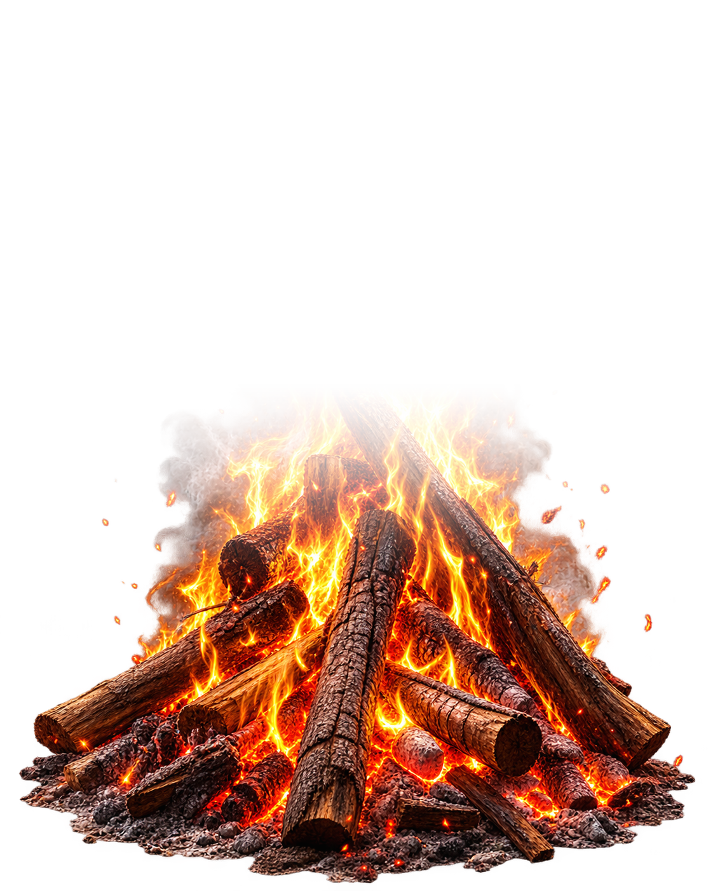

Conversa e presença
Campfires, amigos, participantes e mensagens organizados sem poluir a área central.
CAMPFIRE BLACK PIANO · 1.1.0
Chat, voz, vídeo e momentos compartilhados em uma interface escura, limpa e feita para deixar a comunidade no centro.

✦ Clique fora dos controles e alimente o fogo
SIMPLE DARK
A versão 1.1.0 preserva a aparência atual da R6.6.6.15: fundo quase preto, painéis discretos, bordas finas, acentos teal para presença e âmbar apenas onde a fogueira pede atenção.
Campfires, amigos, participantes e mensagens organizados sem poluir a área central.
LiveKit, Voice Pro, microfone, câmera, deafen e controles de volume dentro da mesma experiência.
Compartilhamento, janelas destacáveis e Watch Together sem abandonar a Campfire.
Quando todos saem, o countdown de cinco minutos permite rejoin antes da limpeza automática.
MESMA IDENTIDADE · OUTRO AMBIENTE
CampfireWeb compartilha o mesmo shell Simple Dark, os mesmos painéis e a mesma hierarquia visual. Recursos exclusivos do Electron usam equivalentes apropriados ao navegador em vez de imitar janelas nativas.
R6.6.6.15
Estas são as capturas de referência da versão que serve de base para a 1.1.0. Elas não são mockups: representam o visual que estamos preservando.
CAMPFIRE BLACK PIANO · 1.1.0
O site destaca a opção mais provável para o seu sistema, mas nunca esconde os outros formatos.
Instalador NSIS com atalhos e escolha de pasta.
Executável portátil, sem instalação tradicional.
Pacote principal para RHEL, Red Hat, Rocky, Alma e Fedora.
Alternativa portátil para distribuições Linux compatíveis.